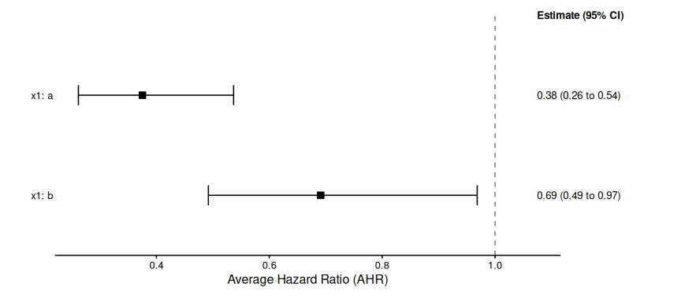
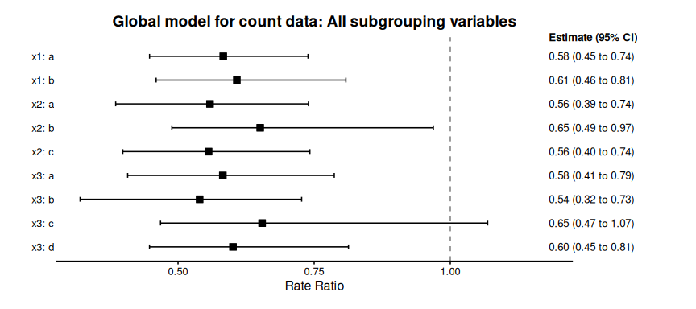

Advanced Functionalities
Miriam Pedrera Gomez, Isaac Gravestock, and Marcel Wolbers
Source:vignettes/Advanced_Functionalities.Rmd
Advanced_Functionalities.RmdThis vignette demonstrates advanced functionalities supported by bonsaiforest2 and the underlying brms package, including customizing prior distributions for global shrinkage models (regularized horseshoe, normal priors with a common or with separate heterogeneity parameters, R2-D2, and coefficient-specific priors), applying stratification to nuisance parameters, and adding an offset to negative binomial regression models for counts.
# Load packages and data
library(bonsaiforest2)
library(brms)1 Customizing Prior Distributions for Global Shrinkage Models
In Bayesian analysis, the choice of priors is important and can materially affect the results.
For most settings, the brms default of flat priors for the intercept (intercept_prior) and unshrunk terms (unshrunk_prior, includes the prior for the main treatment effect) are sensible and do not need fine-tuning. However, we recommend that the user carefully considers the prior for shrunken terms, in particular those for covariate-by-treatment interactions (shrunk_predictive_prior).
bonsaiforest2 gives the user full flexibility to specify priors as described via examples below.
The default priors used by bonsaiforest2 are as follows:
| Prior Component | Parameter Name | Default Prior |
|---|---|---|
| Intercept | intercept_prior |
NULL (i.e. brms default) |
| Unshrunk Terms | unshrunk_prior |
NULL (i.e. brms default) |
| Shrunk Prognostic | shrunk_prognostic_prior |
horseshoe(scale_global = 1); in case the formula specifies random effects (pipe-pipe syntax), automatically uses a normal prior with a half-normal hyperprior with heterogeneity parameter 1 for the standard deviation instead |
| Shrunk Predictive | shrunk_predictive_prior |
horseshoe(scale_global = 1); in case the formula specifies random effects (pipe-pipe syntax), automatically uses a normal prior with a half-normal hyperprior with heterogeneity parameter 1 for the standard deviation instead |
The following examples demonstrate how to customize priors for global shrinkage models, i.e. models which include treatment interactions with all subgrouping variables (x1, x2, and x3) simultaneously. Throughout, we use the same global model for the continuous outcome y in shrink_data as in the Quickstart vignette, with x1, x2, and x3 as unshrunken prognostic terms, and only vary the prior for the shrunken predictive terms. Strong shrinkage priors induce posterior geometries that can be difficult to sample from, so we increase adapt_delta to 0.99 (smaller sampler step sizes) to avoid divergent transitions.
Example 1.1: Global model with a regularized horseshoe prior
This is the global model from the Quickstart vignette: a regularized horseshoe prior is applied to all treatment-by-subgroup interactions trt:x1, trt:x2, and trt:x3. Its parameters are anchored in the trial assumptions of a targeted treatment effect of \(\delta_{plan}=0.3\) and a standard deviation of \(\sigma_{plan}=1\), i.e. \(\tau_0 = \delta_{plan}=0.3\) (scale_global), \(s = 2\sigma_{plan} = 2\) (scale_slab) and \(\nu = 4\) (df_slab).
fit_global_hs <- run_brms_analysis(
data = shrink_data,
response_type = "continuous",
response_formula = y ~ trt,
unshrunk_terms_formula = ~ 1 + x1 + x2 + x3,
shrunk_predictive_formula = ~ 0 + trt:x1 + trt:x2 + trt:x3,
shrunk_predictive_prior = "horseshoe(scale_global = 0.3, scale_slab = 2, df_slab = 4, autoscale = FALSE)",
chains = 2, iter = 1000, warmup = 500, cores = 2, refresh = 0,
control = list(adapt_delta = 0.99)
)
fit_global_hs[["prior"]]| prior | class | coef | group | resp | dpar | nlpar | lb | ub | tag | source |
|---|---|---|---|---|---|---|---|---|---|---|
| horseshoe(scale_global = 0.3, scale_slab = 2, df_slab = 4, autoscale = FALSE) | b | shpredeffect | user | |||||||
| b | trt:x1_onehota | shpredeffect | default | |||||||
| b | trt:x1_onehotb | shpredeffect | default | |||||||
| b | trt:x2_onehota | shpredeffect | default | |||||||
| b | trt:x2_onehotb | shpredeffect | default | |||||||
| b | trt:x2_onehotc | shpredeffect | default | |||||||
| b | trt:x3_onehota | shpredeffect | default | |||||||
| b | trt:x3_onehotb | shpredeffect | default | |||||||
| b | trt:x3_onehotc | shpredeffect | default | |||||||
| b | trt:x3_onehotd | shpredeffect | default | |||||||
| b | unshrunktermeffect | default | ||||||||
| b | Intercept | unshrunktermeffect | default | |||||||
| b | trt | unshrunktermeffect | default | |||||||
| b | x1b | unshrunktermeffect | default | |||||||
| b | x2b | unshrunktermeffect | default | |||||||
| b | x2c | unshrunktermeffect | default | |||||||
| b | x3b | unshrunktermeffect | default | |||||||
| b | x3c | unshrunktermeffect | default | |||||||
| b | x3d | unshrunktermeffect | default | |||||||
| student_t(3, 0, 2.5) | sigma | 0 | default |
The parameter scale_global can be tuned to the anticipated size of the treatment effect. For example, if the outcome is time-to-event and the trial targeted a hazard ratio of 0.7, i.e. \(\delta_{plan}=|\log(0.7)|\), one would set scale_global = abs(log(0.7)).
Example 1.2: Global model with a normal prior and a common heterogeneity parameter
An alternative to the regularized horseshoe prior is a normal prior with a single heterogeneity parameter \(\phi\) which is shared by all treatment-by-subgroup interactions:
\[ \beta_j \sim N(0, \phi) \text{ for all interaction coefficients } j, \qquad \phi \sim HN(1), \]
where \(\phi\) denotes the standard deviation of the normal prior and \(HN(1)\) a half-normal distribution with scale 1. This model assumes exchangeability of the treatment-by-subgroup interactions across the levels of different subgrouping variables. It is the model reported in the Appendix of Wolbers et al. (2026).
brms does not support such a shared variance parameter for fixed effects natively. We therefore declare \(\phi\) as an additional Stan parameter via stanvars, add its half-normal hyperprior to the model block, and reference it in shrunk_predictive_prior. Because phi is declared with <lower=0>, the plain normal_lpdf() defines the half-normal density up to an additive constant, which does not affect sampling.
stanvars_common_phi <- brms::stanvar(
scode = " real<lower=0> phi;\n",
block = "parameters"
) +
brms::stanvar(
scode = " target += normal_lpdf(phi | 0, 1);\n",
block = "model"
)
fit_global_normal_common <- run_brms_analysis(
data = shrink_data,
response_type = "continuous",
response_formula = y ~ trt,
unshrunk_terms_formula = ~ 1 + x1 + x2 + x3,
shrunk_predictive_formula = ~ 0 + trt:x1 + trt:x2 + trt:x3,
shrunk_predictive_prior = brms::set_prior("normal(0, phi)"),
stanvars = stanvars_common_phi,
chains = 2, iter = 1000, warmup = 500, cores = 2, refresh = 0,
control = list(adapt_delta = 0.99)
)
fit_global_normal_common[["prior"]]| prior | class | coef | group | resp | dpar | nlpar | lb | ub | tag | source |
|---|---|---|---|---|---|---|---|---|---|---|
| normal(0, phi) | b | shpredeffect | user | |||||||
| b | trt:x1_onehota | shpredeffect | default | |||||||
| b | trt:x1_onehotb | shpredeffect | default | |||||||
| b | trt:x2_onehota | shpredeffect | default | |||||||
| b | trt:x2_onehotb | shpredeffect | default | |||||||
| b | trt:x2_onehotc | shpredeffect | default | |||||||
| b | trt:x3_onehota | shpredeffect | default | |||||||
| b | trt:x3_onehotb | shpredeffect | default | |||||||
| b | trt:x3_onehotc | shpredeffect | default | |||||||
| b | trt:x3_onehotd | shpredeffect | default | |||||||
| b | unshrunktermeffect | default | ||||||||
| b | Intercept | unshrunktermeffect | default | |||||||
| b | trt | unshrunktermeffect | default | |||||||
| b | x1b | unshrunktermeffect | default | |||||||
| b | x2b | unshrunktermeffect | default | |||||||
| b | x2c | unshrunktermeffect | default | |||||||
| b | x3b | unshrunktermeffect | default | |||||||
| b | x3c | unshrunktermeffect | default | |||||||
| b | x3d | unshrunktermeffect | default | |||||||
| student_t(3, 0, 2.5) | sigma | 0 | default |
Example 1.3: Global model with a normal prior and separate heterogeneity parameters per subgrouping variable
Alternatively, each subgrouping variable can be given its own heterogeneity parameter. This is specified with random effects (pipe-pipe syntax) for each subgrouping variable. By default, bonsaiforest2 then uses a normal prior for the treatment-by-subgroup interactions with a half-normal hyperprior with scale 1 for each standard deviation. The priors printed below show one sd parameter per subgrouping variable.
fit_global_normal_sep <- run_brms_analysis(
data = shrink_data,
response_type = "continuous",
response_formula = y ~ trt,
unshrunk_terms_formula = ~ 1 + x1 + x2 + x3,
shrunk_predictive_formula = ~ (0 + trt || x1) + (0 + trt || x2) + (0 + trt || x3),
chains = 2, iter = 1000, warmup = 500, cores = 2, refresh = 0,
control = list(adapt_delta = 0.99)
)
fit_global_normal_sep[["prior"]]| prior | class | coef | group | resp | dpar | nlpar | lb | ub | tag | source |
|---|---|---|---|---|---|---|---|---|---|---|
| b | unshrunktermeffect | default | ||||||||
| b | Intercept | unshrunktermeffect | default | |||||||
| b | trt | unshrunktermeffect | default | |||||||
| b | x1b | unshrunktermeffect | default | |||||||
| b | x2b | unshrunktermeffect | default | |||||||
| b | x2c | unshrunktermeffect | default | |||||||
| b | x3b | unshrunktermeffect | default | |||||||
| b | x3c | unshrunktermeffect | default | |||||||
| b | x3d | unshrunktermeffect | default | |||||||
| student_t(3, 0, 2.5) | sd | shpredeffect | 0 | default | ||||||
| sd | x1 | shpredeffect | default | |||||||
| normal(0, 1) | sd | trt | x1 | shpredeffect | user | |||||
| sd | x2 | shpredeffect | default | |||||||
| normal(0, 1) | sd | trt | x2 | shpredeffect | user | |||||
| sd | x3 | shpredeffect | default | |||||||
| normal(0, 1) | sd | trt | x3 | shpredeffect | user | |||||
| student_t(3, 0, 2.5) | sigma | 0 | default |
In contrast to Example 1.2, this model assumes exchangeability only across the levels of the same subgrouping variable, so the amount of shrinkage is estimated separately for each subgrouping variable.
The default hyperprior can be overridden with set_prior(..., class = "sd"), which applies to the standard deviations of all subgrouping variables. Below, we anchor the heterogeneity parameter in the targeted treatment effect \(\delta_{plan}=0.3\), as for the one-way models in the Quickstart vignette.
fit_global_normal_sep_tuned <- run_brms_analysis(
data = shrink_data,
response_type = "continuous",
response_formula = y ~ trt,
unshrunk_terms_formula = ~ 1 + x1 + x2 + x3,
shrunk_predictive_formula = ~ (0 + trt || x1) + (0 + trt || x2) + (0 + trt || x3),
shrunk_predictive_prior = set_prior("normal(0, 0.3)", class = "sd"),
chains = 2, iter = 1000, warmup = 500, cores = 2, refresh = 0,
control = list(adapt_delta = 0.99)
)
fit_global_normal_sep_tuned[["prior"]]| prior | class | coef | group | resp | dpar | nlpar | lb | ub | tag | source |
|---|---|---|---|---|---|---|---|---|---|---|
| b | unshrunktermeffect | default | ||||||||
| b | Intercept | unshrunktermeffect | default | |||||||
| b | trt | unshrunktermeffect | default | |||||||
| b | x1b | unshrunktermeffect | default | |||||||
| b | x2b | unshrunktermeffect | default | |||||||
| b | x2c | unshrunktermeffect | default | |||||||
| b | x3b | unshrunktermeffect | default | |||||||
| b | x3c | unshrunktermeffect | default | |||||||
| b | x3d | unshrunktermeffect | default | |||||||
| normal(0, 0.3) | sd | shpredeffect | 0 | user | ||||||
| sd | x1 | shpredeffect | default | |||||||
| sd | trt | x1 | shpredeffect | default | ||||||
| sd | x2 | shpredeffect | default | |||||||
| sd | trt | x2 | shpredeffect | default | ||||||
| sd | x3 | shpredeffect | default | |||||||
| sd | trt | x3 | shpredeffect | default | ||||||
| student_t(3, 0, 2.5) | sigma | 0 | default |
Example 1.4: Global model with an R2-D2 prior
An alternative global-local shrinkage prior to the regularized horseshoe prior is the R2-D2 prior.
In the linear regression setting, it can be motivated as specifying a prior on the model’s coefficient of determination (\(R^2\)) first, and then distributing the prior through to the coefficients.
The R2-D2 prior is also directly supported by brms as illustrated below.
fit_global_r2d2 <- run_brms_analysis(
data = shrink_data,
response_type = "continuous",
response_formula = y ~ trt,
unshrunk_terms_formula = ~ 1 + x1 + x2 + x3,
shrunk_predictive_formula = ~ 0 + trt:x1 + trt:x2 + trt:x3,
shrunk_predictive_prior = "R2D2(mean_R2 = 0.5, prec_R2 = 1)",
chains = 2, iter = 1000, warmup = 500, cores = 2, refresh = 0,
control = list(adapt_delta = 0.99)
)
fit_global_r2d2[["prior"]]| prior | class | coef | group | resp | dpar | nlpar | lb | ub | tag | source |
|---|---|---|---|---|---|---|---|---|---|---|
| R2D2(mean_R2 = 0.5, prec_R2 = 1) | b | shpredeffect | user | |||||||
| b | trt:x1_onehota | shpredeffect | default | |||||||
| b | trt:x1_onehotb | shpredeffect | default | |||||||
| b | trt:x2_onehota | shpredeffect | default | |||||||
| b | trt:x2_onehotb | shpredeffect | default | |||||||
| b | trt:x2_onehotc | shpredeffect | default | |||||||
| b | trt:x3_onehota | shpredeffect | default | |||||||
| b | trt:x3_onehotb | shpredeffect | default | |||||||
| b | trt:x3_onehotc | shpredeffect | default | |||||||
| b | trt:x3_onehotd | shpredeffect | default | |||||||
| b | unshrunktermeffect | default | ||||||||
| b | Intercept | unshrunktermeffect | default | |||||||
| b | trt | unshrunktermeffect | default | |||||||
| b | x1b | unshrunktermeffect | default | |||||||
| b | x2b | unshrunktermeffect | default | |||||||
| b | x2c | unshrunktermeffect | default | |||||||
| b | x3b | unshrunktermeffect | default | |||||||
| b | x3c | unshrunktermeffect | default | |||||||
| b | x3d | unshrunktermeffect | default | |||||||
| student_t(3, 0, 2.5) | sigma | 0 | default |
Example 1.5: Coefficient-specific priors
The four global models above are our recommended starting points. Beyond these, bonsaiforest2 offers additional flexibility which is optional and not needed for most analyses.
By default, bonsaiforest2 uses the same prior for all coefficients assigned to the group of “unshrunken terms”, “shrunken prognostic terms”, or “shrunken predictive terms”, respectively. However, it is possible to fine-tune this by assigning a different prior to one or several coefficients within a group.
The example below illustrates this for a time-to-event outcome. It includes the interaction trt*x3 as an “unshrunken term” and assigns a tighter prior to the regression coefficients for trt:x3b, trt:x3c, and trt:x3d, respectively, compared to other coefficients in the same group.
To implement this, we first call prepare_formula_model() to extract the exact coefficient names that will be included in the model.
Then, we define coefficient-specific priors for these by combining brms::set_prior calls.
# 1. Run prepare_formula_model
prepared_model_coef_specific <- prepare_formula_model(
data = shrink_data,
response_type = "survival",
response_formula = Surv(tt_event, event_yn) ~ trt,
unshrunk_terms_formula = ~ x1 + trt*x3,
shrunk_predictive_formula = ~ 0 + trt:x1,
)
# 2. Inspect the Results
# A. The generated brms formula object
print(prepared_model_coef_specific$formula)
#> tt_event | cens(1 - event_yn) + bhaz(Boundary.knots = c(0, 60.500476574435), knots = c(14.0610682872923, 36.1959635027271, 46.047044984117), intercept = FALSE) ~ unshrunktermeffect + shpredeffect
#> unshrunktermeffect ~ 0 + x1 + trt * x3 + trt
#> shpredeffect ~ 0 + trt:x1_onehot
# B. The processed terms
print(prepared_model_coef_specific$stan_variable_names$X_unshrunktermeffect)
#> [1] "x1a" "x1b" "trt" "x3b" "x3c" "x3d" "trt:x3b"
#> [8] "trt:x3c" "trt:x3d"
# === Prior Strategy ===
# General unshrunk prior: normal(0, 5)
# Specific for trt:x3 interactions: normal(0, 1)
# Create combined prior object
# IMPORTANT: Use EXACT coefficient names from the prepared data
unshrunk_priors_combined <- c(
brms::set_prior("normal(0, 5)", class = "b"), # General
brms::set_prior("normal(0, 1)", class = "b", coef = "trt:x3b"),
brms::set_prior("normal(0, 1)", class = "b", coef = "trt:x3c"),
brms::set_prior("normal(0, 1)", class = "b", coef = "trt:x3d")
)
# Fit the model
fit_coef_specific <- fit_brms_model(
prepared_model = prepared_model_coef_specific,
intercept_prior = "normal(0, 5)",
unshrunk_prior = unshrunk_priors_combined, # Pass the combined object
shrunk_predictive_prior = "horseshoe(scale_global = 1)",
chains = 2, iter = 1000, warmup = 500, cores = 2, refresh = 0
)
fit_coef_specific[["prior"]]| prior | class | coef | group | resp | dpar | nlpar | lb | ub | tag | source |
|---|---|---|---|---|---|---|---|---|---|---|
| horseshoe(scale_global = 1) | b | shpredeffect | user | |||||||
| b | trt:x1_onehota | shpredeffect | default | |||||||
| b | trt:x1_onehotb | shpredeffect | default | |||||||
| normal(0, 5) | b | unshrunktermeffect | user | |||||||
| b | trt | unshrunktermeffect | default | |||||||
| normal(0, 1) | b | trt:x3b | unshrunktermeffect | user | ||||||
| normal(0, 1) | b | trt:x3c | unshrunktermeffect | user | ||||||
| normal(0, 1) | b | trt:x3d | unshrunktermeffect | user | ||||||
| b | x1a | unshrunktermeffect | default | |||||||
| b | x1b | unshrunktermeffect | default | |||||||
| b | x3b | unshrunktermeffect | default | |||||||
| b | x3c | unshrunktermeffect | default | |||||||
| b | x3d | unshrunktermeffect | default | |||||||
| dirichlet(1) | sbhaz | default |
2 Stratification for nuisance parameters
Stratified models which assume different residual variances (continuous endpoints), overdispersion parameters (count endpoints), or baseline hazards (time-to-event endpoints) across strata are also supported in bonsaiforest2 (via brms). The argument stratification_formula defines the grouping factor(s).
Example 2.1: Fully stratified continuous one-way shrinkage model
We fit a one-way model for the continuous outcome y in shrink_data with subgroups defined by the binary covariate x1 with adjustment for x2 and x3 as prognostic factors.
In the model specification below, we assume separate regression coefficients for x2 and x3, respectively, across strata defined by x1 (specified via interaction terms x1*x2 and x1*x3) as well as different residual variances across strata (specified via argument stratification_formula). The only parameter that is shared across strata is the shrinkage parameter for treatment effect heterogeneity.
# model with x1*x2 and x1*x3 (separate regression coef per level of x1 for x2 and x3), and separate variance per x1 strata
oneway_x1_flex_strat <- run_brms_analysis(
data = shrink_data,
response_type = "continuous",
response_formula = y ~ trt,
stratification_formula = ~ x1,
unshrunk_terms_formula = ~ x1 + x1*x2 + x1*x3,
shrunk_predictive_formula = ~ (0 + trt || x1),
shrunk_predictive_prior = set_prior("normal(0, 0.3)", class = "sd"),
chains = 2, iter = 2000, warmup = 1000, cores = 2,
refresh = 0
)
summary_oneway_x1_flex_strat <- summary_subgroup_effects(
brms_fit = oneway_x1_flex_strat
)
summary_oneway_x1_flex_strat$estimates| Subgroup | Median | CI_Lower | CI_Upper |
|---|---|---|---|
| x1: a | 0.490 | 0.269 | 0.713 |
| x1: b | 0.127 | -0.196 | 0.443 |
Example 2.2: Stratified one-way survival model
Assume that the primary analysis of the trial was stratified by variable x2.
A corresponding one-way model for x1 which uses a Cox model stratified by x2 is fitted below.
# Model fitting with stratified baseline hazard
fit_surv_oneway_x1_strat <- run_brms_analysis(
data = shrink_data,
response_type = "survival",
response_formula = Surv(tt_event, event_yn) ~ trt,
stratification_formula = ~ x2,
unshrunk_terms_formula = ~ x1 + x3,
shrunk_predictive_formula = ~ (0 + trt || x1),
shrunk_predictive_prior = set_prior("normal(0, abs(log(0.7)))", class = "sd"),
chains = 2, iter = 1000, warmup = 500, cores = 2, refresh = 0
)
summary_surv_oneway_x1_strat <- summary_subgroup_effects(fit_surv_oneway_x1_strat)
summary_surv_oneway_x1_strat$estimates| Subgroup | Median | CI_Lower | CI_Upper |
|---|---|---|---|
| x1: a | 0.375 | 0.262 | 0.537 |
| x1: b | 0.691 | 0.492 | 0.968 |
plot(summary_surv_oneway_x1_strat)
3 Handling Exposure in Count Outcomes with Offsets
For count data, the observed value often depends on the exposure time or follow-up time. Using an offset variable is the standard statistical method to properly account for this time variation by modeling the event rate (count per unit time) instead of the raw count.
In bonsaiforest2, you can include the offset directly in the response_formula using the syntax: count ~ trt + offset(log_fup_duration).
Example 3.1: Count outcome with offset
The example uses the shrink_data dataset to illustrate a negative binomial model for variable count accounting for treatment trt and the subgrouping variables x1, x2, and x3. Each subject’s follow-up time is provided in variable fup_duration whose log-transformed value is included as an offset.
shrink_data <- bonsaiforest2::shrink_data
# prepare offset variable
shrink_data$log_fup_duration <- log(shrink_data$fup_duration)
count_model_fit <- run_brms_analysis(
data = shrink_data,
response_type = "count",
response_formula = count ~ trt + offset(log_fup_duration),
unshrunk_terms_formula = ~ 1 + x1 + x2 + x3,
shrunk_predictive_formula = ~ 0 + trt:x1 + trt:x2 + trt:x3,
shrunk_predictive_prior = "horseshoe(scale_global = 1)",
chains = 2, iter = 1000, warmup = 500, cores = 2, refresh = 0
)
count_model_summary <- summary_subgroup_effects(brms_fit = count_model_fit)
count_model_summary$estimates| Subgroup | Median | CI_Lower | CI_Upper |
|---|---|---|---|
| x1: a | 0.583 | 0.448 | 0.739 |
| x1: b | 0.608 | 0.460 | 0.808 |
| x2: a | 0.559 | 0.385 | 0.740 |
| x2: b | 0.651 | 0.489 | 0.969 |
| x2: c | 0.556 | 0.399 | 0.742 |
| x3: a | 0.582 | 0.407 | 0.787 |
| x3: b | 0.540 | 0.320 | 0.727 |
| x3: c | 0.654 | 0.468 | 1.069 |
| x3: d | 0.601 | 0.448 | 0.813 |
plot(count_model_summary, title = "Global model for count data: All subgrouping variables")
4 Summary
This vignette demonstrated several advanced functionalities supported by bonsaiforest2:
- Offset variables for count outcomes with varying exposure times
-
Custom priors for global shrinkage models: the regularized horseshoe prior, a normal prior with a common heterogeneity parameter across all subgrouping variables (via
stanvars), a normal prior with separate heterogeneity parameters per subgrouping variable (via random effects), the R2-D2 prior, and, optionally, coefficient-specific priors - Stratification for nuisance parameters that vary across groups
These features provide researchers with powerful tools for complex trial analyses while maintaining the principled Bayesian shrinkage framework.